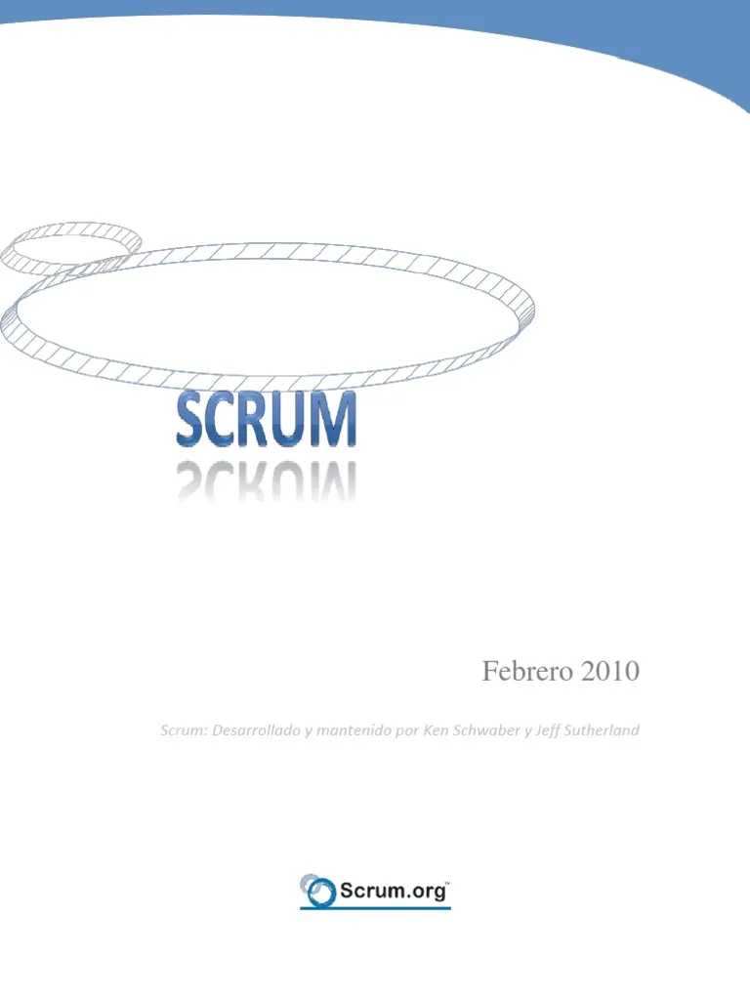
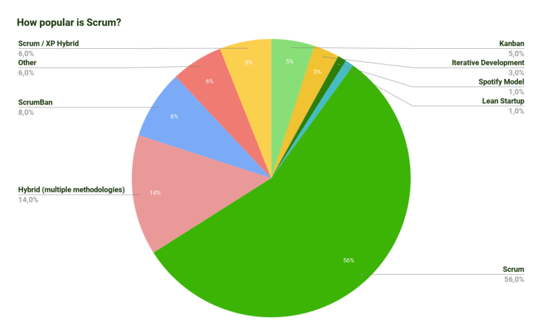

1986 : Origine du terme Scrum
Le terme "Scrum" a été utilisé pour la première fois dans l'article "The New New Product Development Game" par Hirotaka Takeuchi et Ikujiro Nonaka.

Bienvenue sur "Scrumzy", un site dédié à la méthodologie Scrum, développé par Ervan Lemqadem dans le cadre du cours démoMot à l'ETML. Découvrez comment Scrum, un cadre de travail agile, permet aux équipes de collaborer efficacement sur des projets complexes. Explorez les rôles, les cérémonies, les artefacts, les valeurs fondamentales de Scrum. Vous trouverez également une page FAQ pour répondre à vos diverses questions ainsi qu'une page sur l'auteur de ce site.
Scrum est basé sur des itérations courtes appelées "sprints", qui durent généralement de deux à quatre semaines.
Chaque sprint commence par une planification où l'équipe décide des tâches à accomplir. Pendant le sprint, l'équipe
travaille sur ces tâches, et à la fin du sprint, un incrément de produit potentiellement livrable est produit.

Scrum est bien plus qu'une méthodologie ; c'est une manière de penser qui favorise l'innovation et l'efficacité. En mettant l'accent sur la collaboration et l'adaptabilité, Scrum permet aux équipes de livrer des produits de haute qualité tout en répondant efficacement aux besoins changeants des clients. Cette approche favorise non seulement la productivité, mais aussi la satisfaction des membres de l'équipe, car chacun a un rôle clair et une voix dans le processus de développement.
Le terme "Scrum" a été utilisé pour la première fois dans l'article "The New New Product Development Game" par Hirotaka Takeuchi et Ikujiro Nonaka.
Ken Schwaber et Jeff Sutherland ont formalisé Scrum, le transformant en un cadre structuré pour le développement logiciel.
Un moment clé dans l'évolution de Scrum a été la publication du premier guide Scrum.
Scrum est reconnu comme l'une des méthodologies agiles les plus efficaces, aidant les organisations à gérer la complexité des projets modernes avec agilité et résilience.
D'autres entreprisent utilisent également Scrum mais voici une petit séléction pertinente
Voici quelques citations inspirantes utilisables dans Scrum
"L'intelligence est l'habileté à s'adapter au changement."
Stephen Hawking"Faire la moitié de quelque chose revient à dire qu'on ne fait rien."
Jeff Sutherland"Pas d'héroisme. Si vous avez besoin d'un héros pour faire des choses, vous avez un problème. Un effort héroïque devrait être vu comme un échec de planification."
Jeff Sutherland"Si vous suivez 80% du processus, vous obtiendrez 20% des résultats."
Kent Beck"L'agilité n'est pas une méthodologie, c'est une approche."
Vikram Verma"Il y a un moyen de mieux le faire. Cherchez-le."
Thomas A. EdisonACCEDEZ A LA PAGE FAQ SCRUMZY EN CLIQUANT ICI